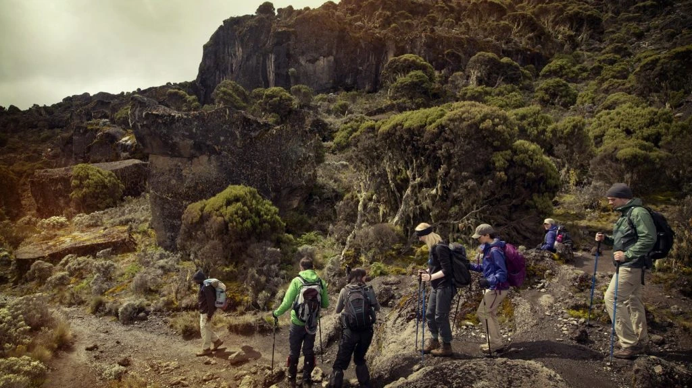
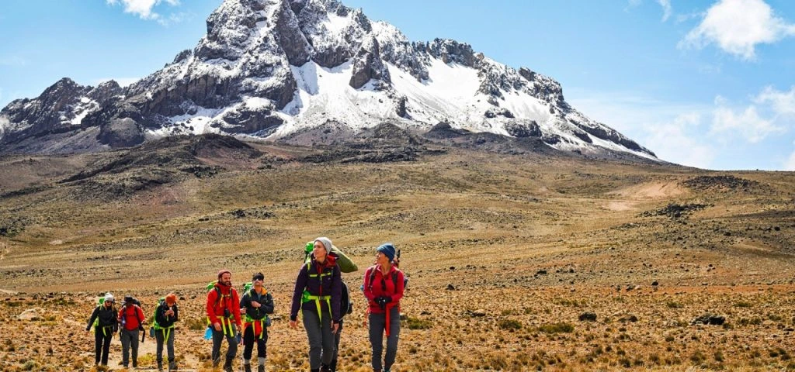

Climbing Kilimanjaro Routes Overview
Climbing Kilimanjaro is a bucket-list adventure for many, offering a chance to conquer Africa’s highest peak and the world’s tallest free-standing mountain. Standing at 5,895 meters (19,341 feet), Mount Kilimanjaro is a majestic icon in northern Tanzania, with its snow-capped summit, Uhuru Peak, being the ultimate goal for trekkers. Accessible from the town of Moshi, the journey to the summit involves trekking through diverse ecosystems, from lush rainforests to alpine deserts. The experience of climbing Kilimanjaro varies depending on the route chosen, with popular options like the Machame, Marangu, and Lemosho routes catering to different skill levels and scenic preferences. Proper acclimatization is essential to minimize the risk of altitude sickness, making the adventure both challenging and rewarding for those who embark on this extraordinary climb.
Machame Route
Often referred to as the "whiskey route," it is favored by about 50% of climbers for its scenic beauty and captivating landscapes. The route spans approximately 62 kilometers and can be completed in a 6 to 7-day itinerary.
Route details
- Length: Approximately 62 kilometers (39 miles)
- Duration: 6 to 7 days
- Difficulty: Moderate to Difficult
- Starting Point: Machame Gate (1,800 meters / 5,905 feet)
- Summit Point: Uhuru Peak (5,895 meters / 19,341 feet)


Marangu Route
Dubbed the "coca cola route," it's the oldest and most popular, featuring huts at Mandara, Kibo, and Horombo stops, providing hikers with bunk beds. Typically completed in 5 days, with an optional additional day for acclimatization at Horombo Hut, covering a total distance of 69 kilometers.
Route details
- Length: Approximately 70 kilometers (43 miles)
- Duration: Typically 5-6 days
- Difficulty: Moderate, but acclimatization is key
- Starting Point: Marangu Gate, located at 1,870 meters (6,135 feet)
- Summit Point: Uhuru Peak (5,895 meters / 19,341 feet)


Lemosho Route
Starting from the western side at Londorossi Gate, it boasts higher success rates due to extended acclimatization periods. Covering 70 kilometers, this route can be completed in as little as six days or ideally over eight days for better acclimatization.
Route details
- Length: Approximately 70 kilometers (43.5 miles)
- Duration: Typically 7 to 8 days
- Difficulty: Moderate to Difficult
- Starting Point: Rongai Gate (2,100 meters / 6,890 feet)
- Summit Point: Uhuru Peak (5,895 meters / 19,341 feet)
Rongai Route
Ascends from the northern side along the Tanzania-Kenya border, offering solitude and a sense of wilderness. Featuring a slow, steady climb, it increases the chances of success and can be completed in 6 to 7 days, covering approximately 70 kilometers.
Route details
- Length: Approximately 72 kilometers (45 miles)
- Duration: Typically 6-7 Days
- Difficulty: Medium
- Starting Point: Londorossi Gate (2,100 meters / 6,890 feet)
- Summit Point: Uhuru Peak (5,895 meters / 19,341 feet)


Northern Circuit Route
The longest route on Kilimanjaro, it starts from the west at Lemosho Gate, providing ample time on the mountain and stunning views of both Uhuru and Kibo peaks. With the highest success rate, it requires a minimum of 8 to 9 days to complete, spanning approximately 70-73 kilometers. Each route presents its own challenges and rewards, catering to a variety of preferences and skill levels for climbers seeking to conquer Kilimanjaro's majestic heights.
Route details
- Length: Approximately Approximately 98 km (61 miles)
- Duration: 9 days (7 days on the mountain + 2 travel days)
- Difficulty: Moderate to Challenging
- Starting Point: Kilimanjaro National Park Gate
- Summit Point: Uhuru Peak (5,895 meters / 19,341 feet)